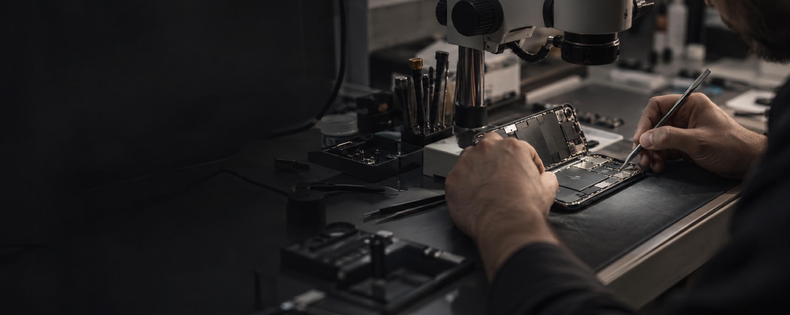

Reparaciones
Diagnóstico, reparación y seguimiento con información clara durante todo el proceso.

Max Point
Cada equipo tiene una historia distinta. Por eso comenzamos entendiendo qué necesita realmente antes de proponer una solución.
Nuestra filosofía
Se trata de entender qué pasó, explicar con claridad y encontrar la solución correcta. Sin apuro. Sin respuestas automáticas. Con criterio.
Sabemos que detrás de cada teléfono hay conversaciones, trabajo, recuerdos y una parte importante de tu vida cotidiana. Por eso lo recibimos con la atención que merece.
Confianza antes que promesas
Primero entendemos el problema. Después te contamos qué conviene hacer, cuánto va a costar y por qué.
Qué hacemos
Desde un diagnóstico claro hasta una reparación compleja o la elección de tu próximo equipo.
Diagnóstico, reparación y seguimiento con información clara durante todo el proceso.
Intervenciones de precisión para problemas que requieren experiencia y equipamiento específico.
Dispositivos elegidos con criterio, revisados y acompañados por una garantía concreta.
Cómo trabajamos
Cada decisión tiene un motivo. Y queremos que lo conozcas antes de avanzar.
Nos contás qué pasó y revisamos juntos el contexto del equipo.
Evaluamos la falla y definimos cuál es la intervención adecuada.
Recibís una propuesta clara antes de que hagamos cualquier trabajo.
Trabajamos con precisión, controlamos el resultado y respaldamos lo realizado.

Laboratorio MaxPointPrecisión y método
El laboratorio
Un entorno preparado, herramientas específicas y el tiempo necesario para tomar buenas decisiones.
No creemos en soluciones improvisadas. Cada equipo se trabaja en un espacio pensado para observar, intervenir y comprobar.
Conocé MaxPointCasos reales
Historias de equipos que llegaron con un problema y encontraron una solución pensada para ellos.

Una revisión metódica evitó una intervención innecesaria.
Diagnóstico de placa y una solución precisa para devolver el equipo a su rutina.

Control final, explicación clara y respaldo después de la entrega.
Equipos seleccionados
No se trata de mostrar un catálogo infinito. Seleccionamos equipos que conocemos y podemos respaldar.
Consultá los modelos disponibles y encontrá el indicado para tu uso.
Conocer disponibilidadEquipos revisados con criterio y acompañamiento para elegir.
Conocer disponibilidadOpciones elegidas por estado, funcionamiento y procedencia.
Conocer disponibilidadExperiencias
Este bloque está preparado para incorporar opiniones reales verificadas de clientes.
“Acá va una opinión real de Google que explique la claridad y la atención recibida.”Opinión real · pendiente de reemplazo
“Acá va una experiencia real sobre el diagnóstico, el seguimiento y el resultado.”Opinión real · pendiente de reemplazo
“Acá va una opinión real sobre la tranquilidad de dejar el equipo en buenas manos.”Opinión real · pendiente de reemplazo
Hablemos de tu equipo